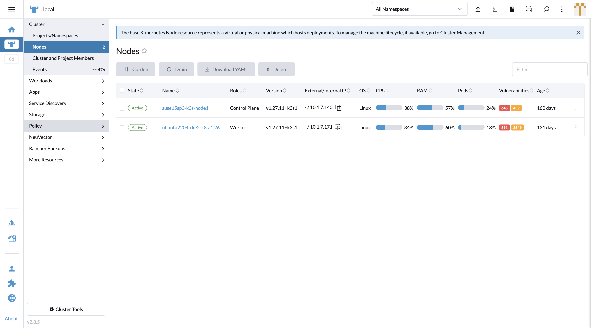
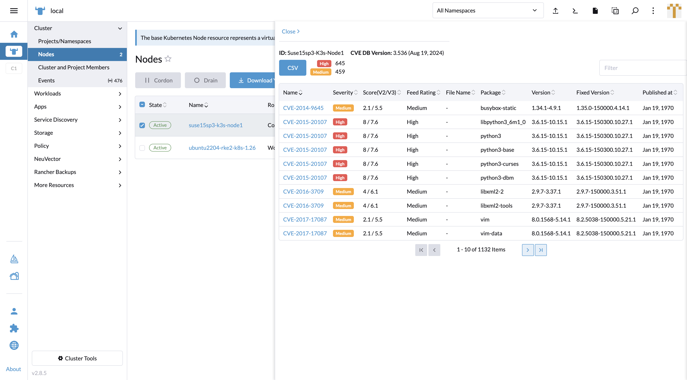
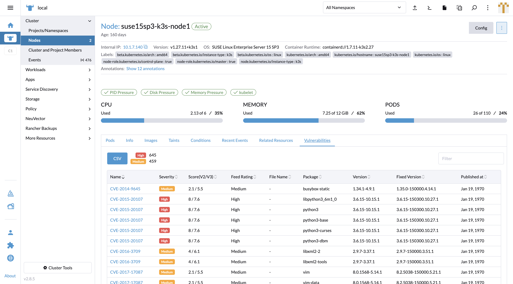
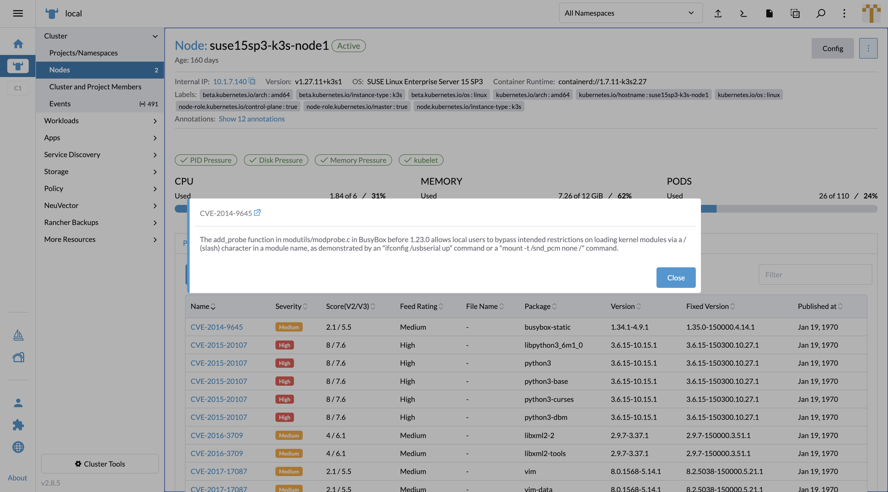
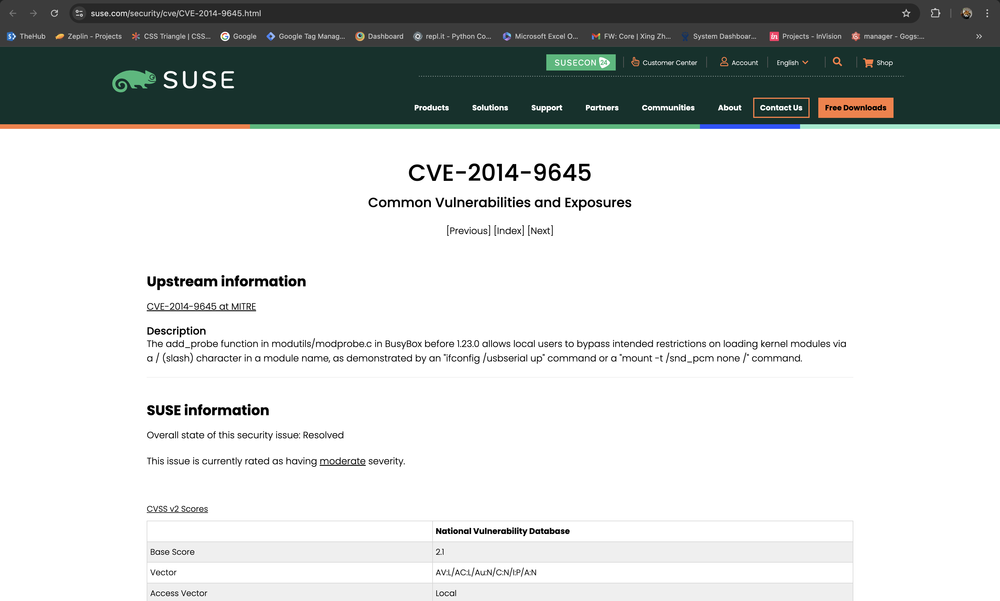
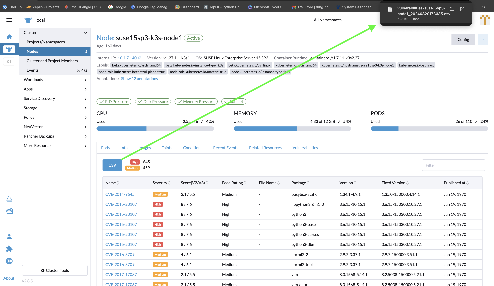
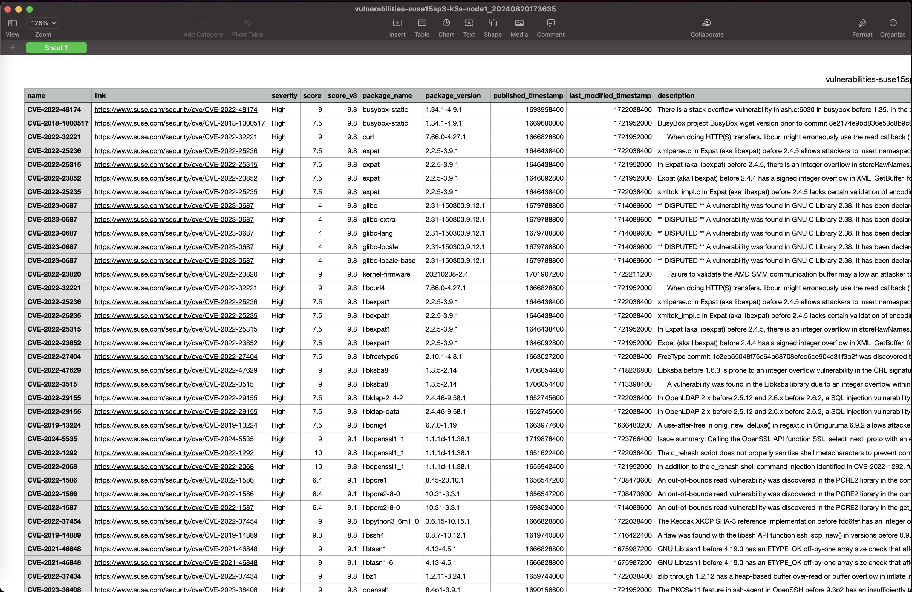
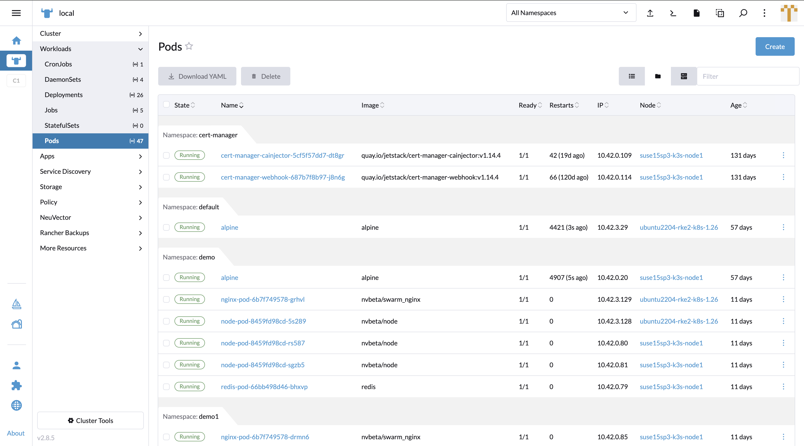
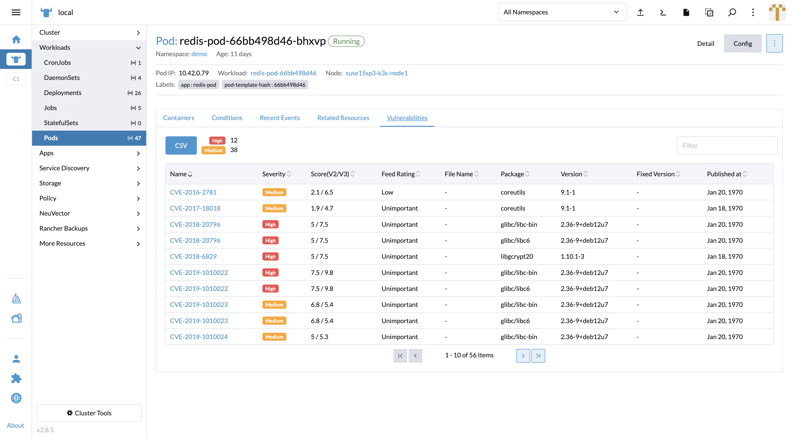

Assets Security Scan Result
As Rancher Manager has its own Nodes and Workloads tab to manage and monitor the assets statuses, NeuVector injects components to display its runtime scan result.
Nodes
In the Nodes tab table view, the Vulnerabilities column is injected to show each node’s detected vulnerabilities amount by high / medium severity.

Clicking on the Vulnerabilities cell will pop up a new display page to show the scan result details. The database version of the scanner is shown as well as a filterable vulnerability list.

Clicking on the Name cell on the Nodes table redirects to the node detail page. NeuVector injects a Vulnerabilities tab to display a table with listed vulnerabilities.

Clicking on the CVE link in the Name cell in the Vulnerabilities table opens a pop up to show CVE descriptions with an external link inn the header to SUSE’s CVE information website.


A CSV file download button is provided above the Vulnerabilities table. The file data includes all the fields which are in the table.


Workloads
Temporarily, the Vulnerabilities column will not be injected in the Workloads table in the v5.4 release due to potential performance concern. The NeuVector team will work with the Rancher team to integrate it soon.
Clicking on a Name in the Pods table redirects to the pod detail page. NeuVector injects a Vulnerabilities tab to display a table with listed vulnerabilities.

